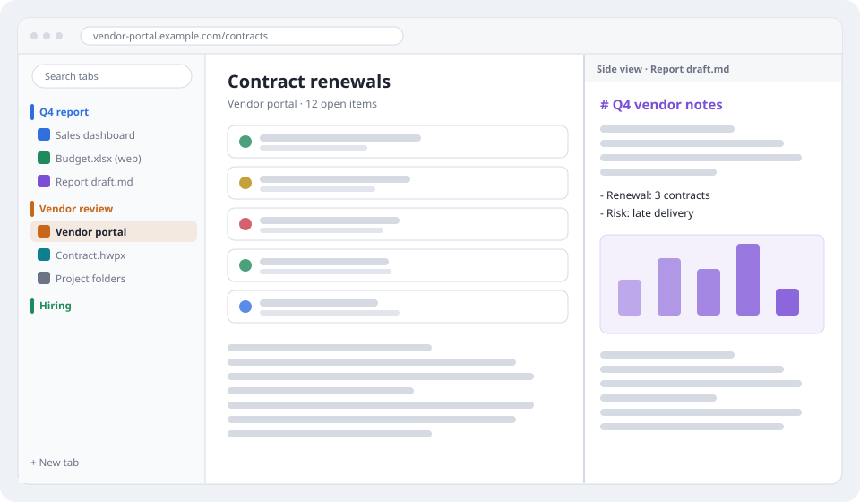
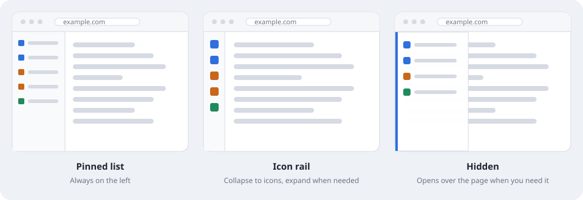
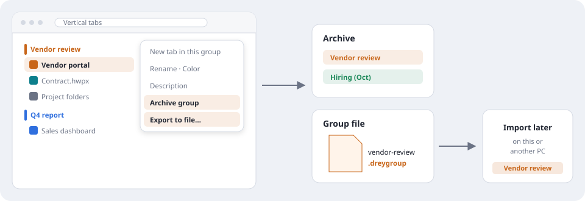
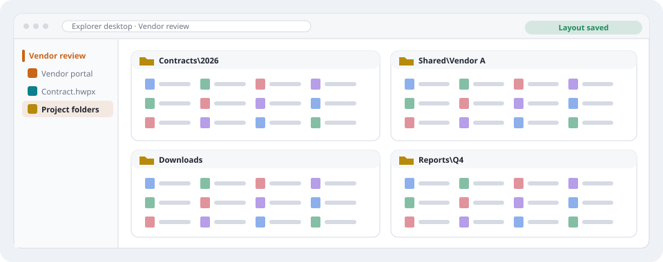
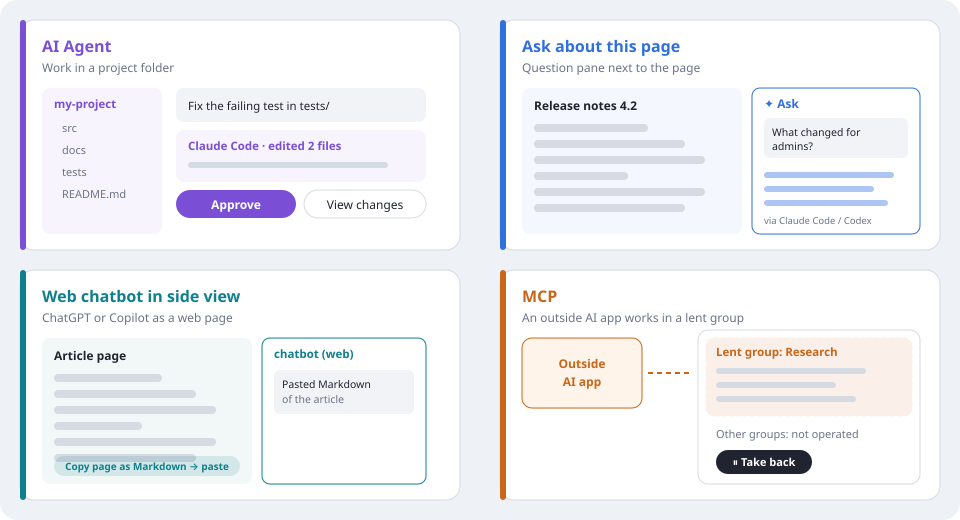
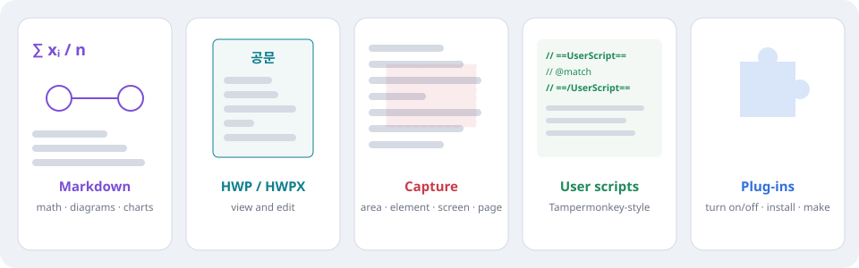

Keep each job together — tabs, documents, folders and AI.
Drey Browser is a Windows browser for work. Web pages, documents, folders and AI help for one job stay together in groups on a vertical tab list, and the page area stays wide.

- Start right away — no Drey account, sign-in or sync. Websites and AI services keep their own sign-in.
- Keep work separate — use it next to your personal browser.
- Your data stays on this PC — in your Windows user profile.
Product tour page. The pictures are drawn examples, not screenshots, and nothing here controls the app. Built on the Microsoft Edge WebView2 (Chromium) engine.
Vertical tabs, wide pages
Tabs live in a list on the left — there is no horizontal tab strip, so the page gets the full height.

- Pinned list — names and groups always in view, good on a wide monitor.
- Icon rail — collapse to icons, expand again when you need names.
- Hidden — opens over the page from a button, the left edge or a shortcut — good on a narrow or tall window.
A group for each job, with the side view
Example — reviewing a vendor: the portal, the contract and the project folders sit together in one group.
- Groups — name, color and description; collapse the ones you are not using.
- Wide page — the current page uses the rest of the window.
- Side view — a second page beside it — here, your Markdown notes while you read the portal.
Archive or export a finished group
Close a job without losing it, or move it as a file.

- Group menu — Archive group or Export to file.
- Archive — the tabs close; bring the whole group back later.
- .dreygroup file — a group saved as a file — files inside folders and website passwords are not included.
- Import later — open it again on this or another PC.
Explorer desktop
Several File Explorer folders inside one tab, kept with the work group.

- Folder windows — contracts, shared, downloads and reports side by side.
- Part of the group — "Project folders" sits in the Vendor review group.
- Layout saved — reopens the same way; folders are not copied and permissions do not change.
AI, four different ways
Each feature does a different job. AI Agent and Ask need Claude Code or Codex installed and signed in with your own account.

- AI Agent — work in a project folder: talk, review file changes, approve or deny actions.
- Ask about this page (✦) — the page text and your question go to Claude Code or Codex on this PC; the answer appears beside the page.
- Web chatbot in the side view — ChatGPT or Copilot as an ordinary web page. It does not read your page by itself — copy the page as Markdown and paste.
- MCP (Model Context Protocol) — an outside AI app reads tabs and operates only inside a group you lend it. ⏸ takes control back.
Documents and extensions
Open documents in tabs and extend the browser. A text/code editor and a hex editor are included for quick fixes.

- Markdown — read and edit with math, diagrams and charts.
- Hangul (HWP/HWPX) — open and edit Korean word-processor documents in a tab.
- Capture — an area, an element, the visible screen or the full page — copy or save.
- User scripts — Tampermonkey-style scripts and backup import; not a full Tampermonkey replacement, and not on built-in pages.
- Plug-ins — turn on or off, install plug-in files, or build your own with the developer docs.